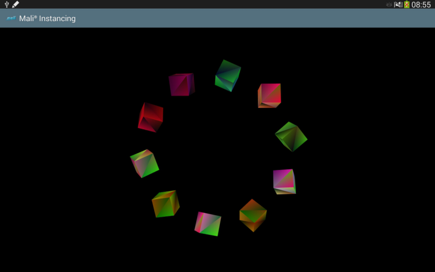
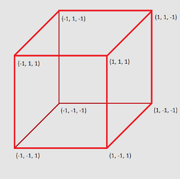
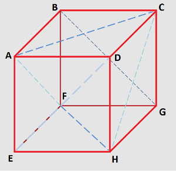
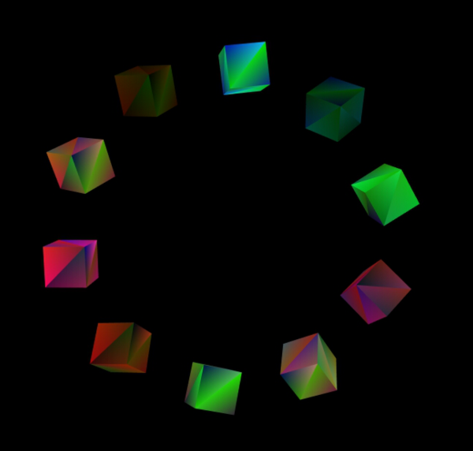

This sample presents the instanced drawing technique using OpenGL ES 3.0.
Overview

Each cube is an instance of the same object.
There is only one copy of the cube vertex data in memory, and each of the cubes drawn is an instance of that data. This reduces the amount of memory that needs to be transferred to the GPU. By using gl_instanceID in the shader, each cube can have a different position, rotation speed and colour. This technique can be used wherever repeated geometry is used in a scene.
Generating a Geometry
To render a cube (which is the most basic 3D shape) we need to generate coordinates for its vertices. This is the first step we would like to focus on. Please look at the image below.

Coordinates of cube vertices.
As shown in the image, the cube vertex coordinates are arranged around point <0, 0, 0> which places them in [<-1, -1, -1>, <1, 1, 1>] range. This is not necessary. You are able to translate the coordinates in any direction or to scale the cube, but you have to be sure that your cube will be still visible on the screen. If you are not sure how to do that, just follow our suggestions. There is another reason for us to use the coordinates arranged around the center of the screen (point <0, 0, 0>) - we will then generate copies of the cube and each instance will be translated to a new position (so that the cubes move on a circular trajectory). But more about this later.
To have cube vertices is not enough to draw the cubic shape. The basic OpenGL ES rendering technique is based on drawing triangles that make up a requested shape. This will be our next step. This is important to mention here that whilst describing cube triangle vertices, you should follow the clockwise or counter-clockwise order, otherwise OpenGL ES will have some trouble with detecting front and back faces. In this example we are using clockwise (CW) order to describe cube coordinates as this is the default for OpenGL ES.

Triangles which make up a cubic shape.
Please look at the code presented below for more details.
void CubeModel::getTriangleRepresentation(float** coordinatesPtrPtr,
int* numberOfCoordinatesPtr,
int* numberOfPointsPtr,
{
ASSERT(coordinatesPtrPtr != NULL,
"Cannot use null pointer while calculating coordinates");
int currentIndex = 0;
*coordinatesPtrPtr = (float*) malloc(numberOfCubeTriangleCoordinates * sizeof(float));
ASSERT(*coordinatesPtrPtr != NULL,
"Could not allocate memory for result array.")
const Vec3f pointA = {-1.0f, 1.0f, 1.0f};
const Vec3f pointB = {-1.0f, 1.0f, -1.0f};
const Vec3f pointC = { 1.0f, 1.0f, -1.0f};
const Vec3f pointD = { 1.0f, 1.0f, 1.0f};
const Vec3f pointE = {-1.0f, -1.0f, 1.0f};
const Vec3f pointF = {-1.0f, -1.0f, -1.0f};
const Vec3f pointG = { 1.0f, -1.0f, -1.0f};
const Vec3f pointH = { 1.0f, -1.0f, 1.0f};
(*coordinatesPtrPtr)[currentIndex++] = pointA.x;
(*coordinatesPtrPtr)[currentIndex++] = pointA.y;
(*coordinatesPtrPtr)[currentIndex++] = pointA.z;
(*coordinatesPtrPtr)[currentIndex++] = pointB.x;
(*coordinatesPtrPtr)[currentIndex++] = pointB.y;
(*coordinatesPtrPtr)[currentIndex++] = pointB.z;
(*coordinatesPtrPtr)[currentIndex++] = pointC.x;
(*coordinatesPtrPtr)[currentIndex++] = pointC.y;
(*coordinatesPtrPtr)[currentIndex++] = pointC.z;
(*coordinatesPtrPtr)[currentIndex++] = pointA.x;
(*coordinatesPtrPtr)[currentIndex++] = pointA.y;
(*coordinatesPtrPtr)[currentIndex++] = pointA.z;
(*coordinatesPtrPtr)[currentIndex++] = pointC.x;
(*coordinatesPtrPtr)[currentIndex++] = pointC.y;
(*coordinatesPtrPtr)[currentIndex++] = pointC.z;
(*coordinatesPtrPtr)[currentIndex++] = pointD.x;
(*coordinatesPtrPtr)[currentIndex++] = pointD.y;
(*coordinatesPtrPtr)[currentIndex++] = pointD.z;
(*coordinatesPtrPtr)[currentIndex++] = pointF.x;;
(*coordinatesPtrPtr)[currentIndex++] = pointF.y;;
(*coordinatesPtrPtr)[currentIndex++] = pointF.z;;
(*coordinatesPtrPtr)[currentIndex++] = pointE.x;
(*coordinatesPtrPtr)[currentIndex++] = pointE.y;
(*coordinatesPtrPtr)[currentIndex++] = pointE.z;
(*coordinatesPtrPtr)[currentIndex++] = pointH.x;
(*coordinatesPtrPtr)[currentIndex++] = pointH.y;
(*coordinatesPtrPtr)[currentIndex++] = pointH.z;
(*coordinatesPtrPtr)[currentIndex++] = pointF.x;
(*coordinatesPtrPtr)[currentIndex++] = pointF.y;
(*coordinatesPtrPtr)[currentIndex++] = pointF.z;
(*coordinatesPtrPtr)[currentIndex++] = pointH.x;
(*coordinatesPtrPtr)[currentIndex++] = pointH.y;
(*coordinatesPtrPtr)[currentIndex++] = pointH.z;
(*coordinatesPtrPtr)[currentIndex++] = pointG.x;
(*coordinatesPtrPtr)[currentIndex++] = pointG.y;
(*coordinatesPtrPtr)[currentIndex++] = pointG.z;
(*coordinatesPtrPtr)[currentIndex++] = pointG.x;
(*coordinatesPtrPtr)[currentIndex++] = pointG.y;
(*coordinatesPtrPtr)[currentIndex++] = pointG.z;
(*coordinatesPtrPtr)[currentIndex++] = pointC.x;
(*coordinatesPtrPtr)[currentIndex++] = pointC.y;
(*coordinatesPtrPtr)[currentIndex++] = pointC.z;
(*coordinatesPtrPtr)[currentIndex++] = pointB.x;
(*coordinatesPtrPtr)[currentIndex++] = pointB.y;
(*coordinatesPtrPtr)[currentIndex++] = pointB.z;
(*coordinatesPtrPtr)[currentIndex++] = pointG.x;
(*coordinatesPtrPtr)[currentIndex++] = pointG.y;
(*coordinatesPtrPtr)[currentIndex++] = pointG.z;
(*coordinatesPtrPtr)[currentIndex++] = pointB.x;
(*coordinatesPtrPtr)[currentIndex++] = pointB.y;
(*coordinatesPtrPtr)[currentIndex++] = pointB.z;
(*coordinatesPtrPtr)[currentIndex++] = pointF.x;
(*coordinatesPtrPtr)[currentIndex++] = pointF.y;
(*coordinatesPtrPtr)[currentIndex++] = pointF.z;
(*coordinatesPtrPtr)[currentIndex++] = pointE.x;
(*coordinatesPtrPtr)[currentIndex++] = pointE.y;
(*coordinatesPtrPtr)[currentIndex++] = pointE.z;
(*coordinatesPtrPtr)[currentIndex++] = pointA.x;
(*coordinatesPtrPtr)[currentIndex++] = pointA.y;
(*coordinatesPtrPtr)[currentIndex++] = pointA.z;
(*coordinatesPtrPtr)[currentIndex++] = pointD.x;
(*coordinatesPtrPtr)[currentIndex++] = pointD.y;
(*coordinatesPtrPtr)[currentIndex++] = pointD.z;
(*coordinatesPtrPtr)[currentIndex++] = pointE.x;
(*coordinatesPtrPtr)[currentIndex++] = pointE.y;
(*coordinatesPtrPtr)[currentIndex++] = pointE.z;
(*coordinatesPtrPtr)[currentIndex++] = pointD.x;
(*coordinatesPtrPtr)[currentIndex++] = pointD.y;
(*coordinatesPtrPtr)[currentIndex++] = pointD.z;
(*coordinatesPtrPtr)[currentIndex++] = pointH.x;
(*coordinatesPtrPtr)[currentIndex++] = pointH.y;
(*coordinatesPtrPtr)[currentIndex++] = pointH.z;
(*coordinatesPtrPtr)[currentIndex++] = pointH.x;
(*coordinatesPtrPtr)[currentIndex++] = pointH.y;
(*coordinatesPtrPtr)[currentIndex++] = pointH.z;
(*coordinatesPtrPtr)[currentIndex++] = pointD.x;
(*coordinatesPtrPtr)[currentIndex++] = pointD.y;
(*coordinatesPtrPtr)[currentIndex++] = pointD.z;
(*coordinatesPtrPtr)[currentIndex++] = pointC.x;
(*coordinatesPtrPtr)[currentIndex++] = pointC.y;
(*coordinatesPtrPtr)[currentIndex++] = pointC.z;
(*coordinatesPtrPtr)[currentIndex++] = pointH.x;
(*coordinatesPtrPtr)[currentIndex++] = pointH.y;
(*coordinatesPtrPtr)[currentIndex++] = pointH.z;
(*coordinatesPtrPtr)[currentIndex++] = pointC.x;
(*coordinatesPtrPtr)[currentIndex++] = pointC.y;
(*coordinatesPtrPtr)[currentIndex++] = pointC.z;
(*coordinatesPtrPtr)[currentIndex++] = pointG.x;
(*coordinatesPtrPtr)[currentIndex++] = pointG.y;
(*coordinatesPtrPtr)[currentIndex++] = pointG.z;
(*coordinatesPtrPtr)[currentIndex++] = pointF.x;
(*coordinatesPtrPtr)[currentIndex++] = pointF.y;
(*coordinatesPtrPtr)[currentIndex++] = pointF.z;
(*coordinatesPtrPtr)[currentIndex++] = pointB.x;
(*coordinatesPtrPtr)[currentIndex++] = pointB.y;
(*coordinatesPtrPtr)[currentIndex++] = pointB.z;
(*coordinatesPtrPtr)[currentIndex++] = pointA.x;
(*coordinatesPtrPtr)[currentIndex++] = pointA.y;
(*coordinatesPtrPtr)[currentIndex++] = pointA.z;
(*coordinatesPtrPtr)[currentIndex++] = pointF.x;
(*coordinatesPtrPtr)[currentIndex++] = pointF.y;
(*coordinatesPtrPtr)[currentIndex++] = pointF.z;
(*coordinatesPtrPtr)[currentIndex++] = pointA.x;
(*coordinatesPtrPtr)[currentIndex++] = pointA.y;
(*coordinatesPtrPtr)[currentIndex++] = pointA.z;
(*coordinatesPtrPtr)[currentIndex++] = pointE.x;
(*coordinatesPtrPtr)[currentIndex++] = pointE.y;
(*coordinatesPtrPtr)[currentIndex++] = pointE.z;
if (scalingFactor != 1.0
f)
{
{
}
}
if (numberOfCoordinatesPtr != NULL)
{
}
if (numberOfPointsPtr != NULL)
{
}
}
We would like to tell OpenGL ES to take the data and draw the cube. How to do that will be described below.
First of all, we will need a buffer object that will be used to store the vertex coordinates of the triangles making up the cube.
Generate buffer object (in the code we are generating 3 buffer objects as we will need them in further steps, but at this point you will need only one of them: the cubeCoordinatesBufferObjectId buffer object):
We need to call the function (already described above) to get the cube's coordinate data.
&numberOfCubeTriangleCoordinates,
The next step is to copy the retrieved data into the buffer object.
numberOfCubeTriangleCoordinates *
sizeof(
GLfloat),
GL_STATIC_DRAW));
The next thing to do is to set the vertex attrib array for the cube's coordinate. The function works with the currently bound array buffer object. We are re-binding buffer objects many times in our application, which is why we need to do that one more time here. However, this is not necessary if you are sure that the buffer object that stores the vertex coordinates is currently bound to the GL_ARRAY_BUFFER target. Please note that all of the following functions should be called for an active program object (more about that in the following section Program Object).
NUMBER_OF_POINT_COORDINATES,
GL_FLOAT,
GL_FALSE,
0,
0));
At this point, you should be interested in the positionLocation variable: what does it stand for? This is an attribute location retrieved from the program object that we are using for rendering. More about that will be described in the following section Program Object. Once you will be familiar with program objects and properly initialize this value, it is enough to call
to render a single cube on a screen. Please note that GL_TRIANGLES mode is used, which corresponds to the triangular representation of the cube coordinates we have generated.
Program Object
To start working with a program object, we have to generate its ID first.
The program object needs fragment and vertex shaders to be attached to it. Let's now focus on generating and setting shader objects.
The basic mechanism looks like follows:
- Create shader object:
*shaderObjectIdPtr =
GL_CHECK(glCreateShader(shaderType));
- Set shader source: Please note that the strings variable is storing the shader source read from a file.
- Compile shader:
GL_CHECK(glCompileShader(*shaderObjectIdPtr));
GL_CHECK(glGetShaderiv(*shaderObjectIdPtr, GL_COMPILE_STATUS, &compileStatus));
Once you have called those functions for both fragment and vertex shaders, you should now attach both to a program object,
link the program object,
and set the program object to be used (active).
The shader objects that we use in our application are more advanced, however, if you are interested in rendering one cube only (as we were describing in previous section Generating a Geometry) it is enough to define shaders with the code presented below.
Vertex shader:
#version 300 es
in
vec4 attributePosition;
{
float fieldOfView = 1.0 / tan(perspectiveVector.x * 0.5);
mat4 cameraMatrix =
mat4 (1.0, 0.0, 0.0, 0.0,
0.0, 1.0, 0.0, 0.0,
0.0, 0.0, 1.0, 0.0,
cameraVector.x, cameraVector.y, cameraVector.z, 1.0);
mat4 perspectiveMatrix =
mat4 (fieldOfView/perspectiveVector.y, 0.0, 0.0, 0.0,
0.0, fieldOfView, 0.0, 0.0,
0.0, 0.0, -(perspectiveVector.w + perspectiveVector.z) / (perspectiveVector.w - perspectiveVector.z), -1.0,
0.0, 0.0, (-2.0 * perspectiveVector.w * perspectiveVector.z) / (perspectiveVector.w - perspectiveVector.z), 0.0);
gl_Position = perspectiveMatrix * cameraMatrix * attributePosition;
}
Fragment shader:
#version 300 es
{
fragmentColour =
vec4(0.3, 0.2, 0.8, 1.0);
}
Now you can see what the positionLocation variable stands for (as described in the previous section Generating a Geometry). It is a location of an attribute named attributePosition. How do we get an attribute location?
Once the program object is linked and active, you can call
Please remember that it is always a good idea to check whether the retrieved value is valid. If the attribute name was not found or is inactive (not used) in the shader, then -1 is returned (which is considered as an invalid attribute location).
If there is a valid value returned, you can use it in the steps previously described in Generating a Geometry.
Instanced Drawing
The main idea of this application is to present the instanced drawing technique. Once you are familiar with the previous sections (Generating a Geometry and Program Object), you are ready to do that.
First of all, we have to know how many instances of the cube object we want to render.
#define NUMBER_OF_CUBES (10)
The next thing to do is to adjust the draw command so that all the cubes will be rendered. Please note that this time we are using glDrawArraysInstanced() rather than glDrawArrays() as described in Generating a Geometry.
GL_CHECK(glDrawArraysInstanced(GL_TRIANGLES,
0,
And this is it. We now have NUMBER_OF_CUBES drawn on the screen. But the problem is that all the cubes are rendered in the same place on the screen, so we cannot see all of them. How should we solve this problem? It is rather simple: set a different position for each cube. The cubes should have a different colour as well, so we will use a uniform block in this situation.
In our vertex shader there are two new things added
where numberOfCubes is defined as
const int numberOfCubes = 10;
Then, if we would like to take a single element from one of those arrays, we will need to use gl_InstanceID as an index, which indicates the index of the element that is currently being rendered (in our case the value is from a range [0, NUMBER_OF_CUBES - 1]).
In the API, we need to retrieve the location of the uniform block,
verify whether the returned value is valid,
and set data.
0));
GL_CHECK(glBindBufferBase (GL_UNIFORM_BUFFER,
0,
Thanks to that, the program object will use the data stored in the buffer object named uniformBlockDataBufferObjectId. The buffer object was generated as already described in the previous section Generating a Geometry and filled with data as shown below.
NULL,
GL_STATIC_DRAW));
GL_CHECK(glBufferSubData(GL_ARRAY_BUFFER,
0,
GL_CHECK(glBufferSubData(GL_ARRAY_BUFFER,
{
for (int allComponents = 0;
allComponents++)
{
}
}
We wanted our cubes to move on a circular trajectory, spinning with a different speed, and having different colours. Please look into the vertex and fragment shader code to see how this is implemented.
Vertex shader code
const int numberOfCubes = 10;
const float pi = 3.14159265358979323846;
const float radius = 20.0;
in
vec4 attributePosition;
{
};
{
float fieldOfView = 1.0 / tan(perspectiveVector.x * 0.5);
1.0);
vec3 rotationOfube =
vec3 (
float(gl_InstanceID + 1) * 5.0 * time);
vertexColor = attributeColor *
cubeColor[gl_InstanceID];
mat4 translationMatrix =
mat4 (1.0, 0.0, 0.0, 0.0,
0.0, 1.0, 0.0, 0.0,
0.0, 0.0, 1.0, 0.0,
locationOfCube.
x, locationOfCube.
y, locationOfCube.
z, 1.0);
mat4 cameraMatrix =
mat4 (1.0, 0.0, 0.0, 0.0,
0.0, 1.0, 0.0, 0.0,
0.0, 0.0, 1.0, 0.0,
cameraVector.x, cameraVector.y, cameraVector.z, 1.0);
mat4 xRotationMatrix =
mat4 (1.0, 0.0, 0.0, 0.0,
0.0, cos(pi * rotationOfube.
x / 180.0), sin(pi * rotationOfube.
x / 180.0), 0.0,
0.0, -sin(pi * rotationOfube.
x / 180.0), cos(pi * rotationOfube.
x / 180.0), 0.0,
0.0, 0.0, 0.0, 1.0);
mat4 yRotationMatrix =
mat4 (cos(pi * rotationOfube.
y / 180.0), 0.0, -sin(pi * rotationOfube.
y / 180.0), 0.0,
0.0, 1.0, 0.0, 0.0,
sin(pi * rotationOfube.
y / 180.0), 0.0, cos(pi * rotationOfube.
y / 180.0), 0.0,
0.0, 0.0, 0.0, 1.0);
mat4 zRotationMatrix =
mat4 ( cos(pi * rotationOfube.
z / 180.0), sin(pi * rotationOfube.
z / 180.0), 0.0, 0.0,
-sin(pi * rotationOfube.
z / 180.0), cos(pi * rotationOfube.
z / 180.0), 0.0, 0.0,
0.0, 0.0, 1.0, 0.0,
0.0, 0.0, 0.0, 1.0);
mat4 perspectiveMatrix =
mat4 (fieldOfView/perspectiveVector.y, 0.0, 0.0, 0.0,
0.0, fieldOfView, 0.0, 0.0,
0.0, 0.0, -(perspectiveVector.w + perspectiveVector.z) / (perspectiveVector.w - perspectiveVector.z), -1.0,
0.0, 0.0, (-2.0 * perspectiveVector.w * perspectiveVector.z) / (perspectiveVector.w - perspectiveVector.z), 0.0);
mat4 tempMatrix = xRotationMatrix;
tempMatrix = yRotationMatrix * tempMatrix;
tempMatrix = zRotationMatrix * tempMatrix;
tempMatrix = translationMatrix * tempMatrix;
tempMatrix = cameraMatrix * tempMatrix;
tempMatrix = perspectiveMatrix * tempMatrix;
gl_Position = tempMatrix * attributePosition;
}
Fragment shader code
{
fragmentColour = vertexColor;
}
In the API, we query for locations of all the uniforms used in a vertex shader by calling
ASSERT(uniformLocation != -1,
"Could not retrieve uniform location: uniformName");
Where of course, uniformName stands for the actual name of a uniform used in the shader.
Then, depending on the uniform type (float, vec3, vec4), we use different OpenGL ES call to set values for the uniforms.
The camera position and perspective vector are constant during rendering, so it's enough to call the functions shown below only once.
The time value should be updated per frame, so the call
is issued for each frame being rendered (placed inside renderFrame() function).
After all the steps described above, we get the result:

The result of instanced drawing technique.